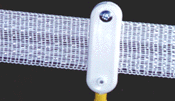

- training -
|  |
They must be flexible enough to move effortlessly through positions that would be impossible for most people. Rhythmic gymnasts are without question among the most highly trained athletes, and deserve every bit of the respect and admiration that we pay them here at the CHP. The flexibility training techniques that are used in rhythmic gymnastics have taken the principles of contortion, dance, and acrobatics . The coaches of the 1990's are achiving excellent results in the area of flexibility training. We show below some amazing examples of how flexibility training is being implemented among elite rhythmic gymnasts at the International (Brevet) level. |
They must be flexible enough to move effortlessly through positions that would be impossible for most people. Rhythmic gymnasts are without question among the most highly trained athletes, and deserve every bit of the respect and admiration that we pay them here at the CHP. The flexibility training techniques that are used in rhythmic gymnastics have taken the principles of contortion, dance, and acrobatics . The coaches of the 1990's are achiving excellent results in the area of flexibility training. We show below some amazing examples of how flexibility training is being implemented among elite rhythmic gymnasts at the International (Brevet) level.
 |
|
1 Schmiden 1997 (1) Schmiden 1997 (2) Schmiden 1998 (1) Schmiden 1998 (2) Koblenz 1996Links DM 1997 St. 2 EM 2000 Saragossa Nr1 EM 2000 Saragossa Nr2 EM 2000 Saragossa Nr. 3 Ergebnisse Verviers Finals Deventer 2000 Training Schmiden 2001 Nr. 1 pictures from other fotografher Barkmann WM Madrid 2001 Nr. Scholl Foto Gallerie3 Bilder von der WM ( Fotobuch) Olympiasiegerinnen 1984-1996 I. |
|
1 Schmiden 1997 (1) Schmiden 1997 (2) Schmiden 1998 (1) Schmiden 1998 (2) Koblenz 1996Links DM 1997 St. 2 EM 2000 Saragossa Nr1 EM 2000 Saragossa Nr2 EM 2000 Saragossa Nr. 3 Ergebnisse Verviers Finals Deventer 2000 Training Schmiden 2001 Nr. 1 pictures from other fotografher Barkmann WM Madrid 2001 Nr. Scholl Foto Gallerie3 Bilder von der WM ( Fotobuch) Olympiasiegerinnen 1984-1996 I. |
also look at: http://www.uni-mainz.de/~leitk000/rugby/sicherheitstraining.html